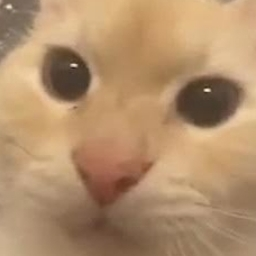
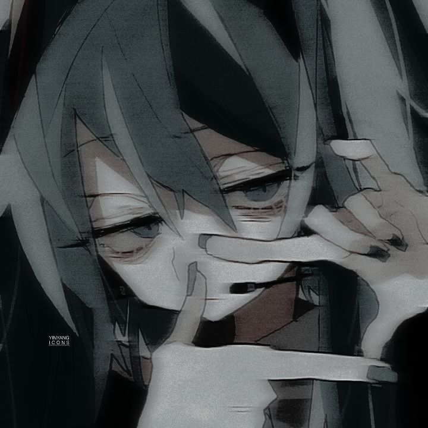
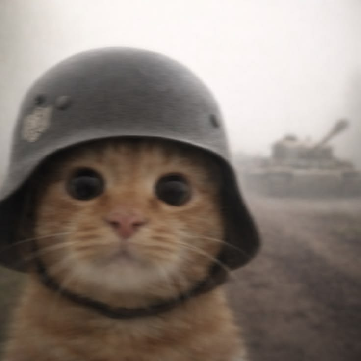
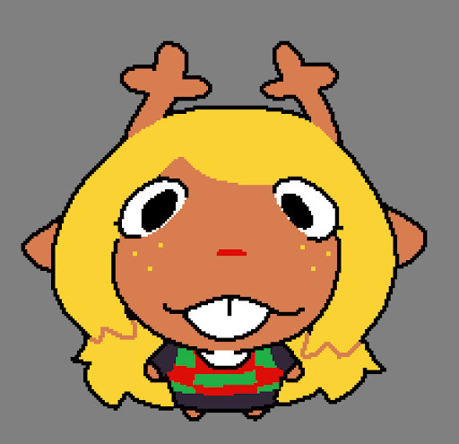

Luca Di Guglielmo
Lider · Backend developer · Game designer
GAMY-project es un grupo fundado el 11/03/2026, conformado por 4 participantes:

Lider · Backend developer · Game designer

Frontend web developer & designer

Frontend & Backend web developer

Backend developer
Multiplataformero, un juego basico en 2D, es el proyecto desarrollado por el equipo de GAMY-project.
El juego consiste en un entorno donde el jugador debera explorar el mapa, conseguir todas las monedas y pasar avanzar al siguiente nivel